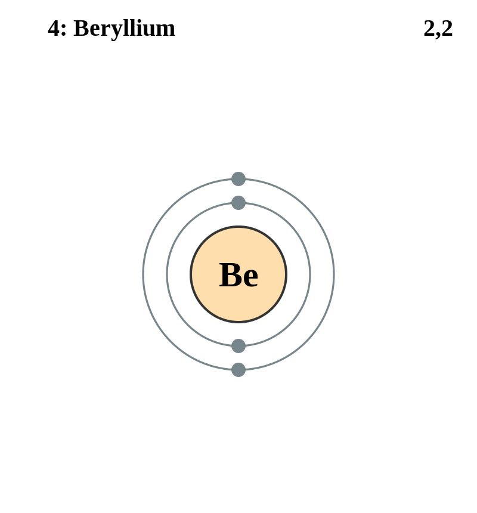

Basic Information about the element
Basic Information about the element
Name: Beryllium
Symbol: Be
Atomic Number: 4

1s2 2s2
The chemical element beryllium is classed as an an alkali earth metal.
Pure beryllium was discovered in 1828 by Friederich Wöhler and Antoine Bussy.
| Number of Protons/Electrons: | 4 |
| Number of Neutrons: | 5 |
| Atomic Mass: | 9.012182 amu |
| Melting Point: | 1278 °C |
| Boiling Point: | 2970 °C |
| Classification: | Alkaline Earth |
| Uses: | Spacecraft, Missiles, Aircraft |